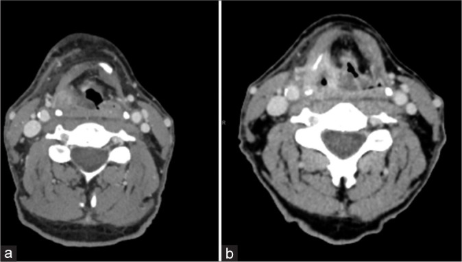
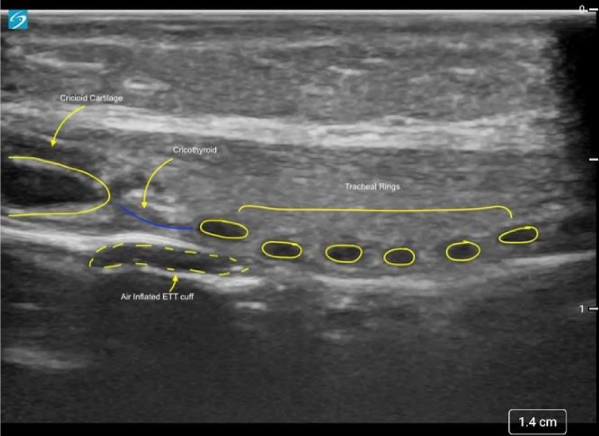
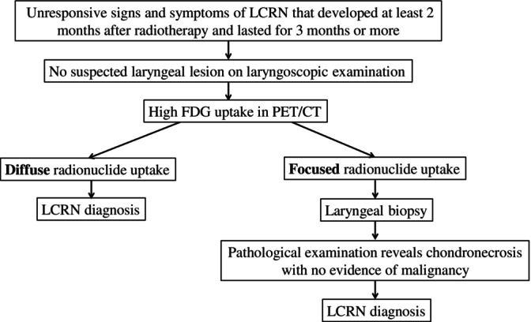
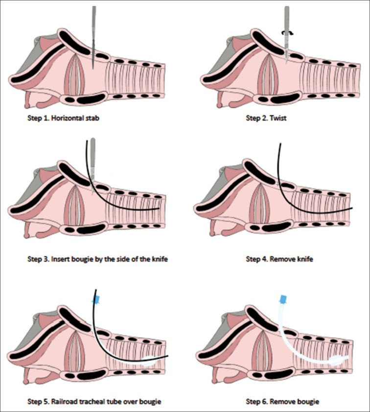

1769 — Mở khí quản & front-of-neck access xuyên cổ ĐÃ XẠ / Tracheostomy & front-of-neck access in the irradiated neck
Tags: pattern:xo-hoa-sau-xa pattern:hep-duong-tho pattern:mat-moc-giai-phau pattern:day-da pattern:lech-khi-quan vung:dau-co vung:co vung:thanh-quan vung:duong-tho-tren protocol:CT protocol:sieu-am protocol:lieu-OAR score:ORN-DAS score:Chandler incidentaloma:khong
Mức chắc chắn (certainty): tổng hợp y văn (literature synthesis) — 1 đoàn hệ hồi cứu 231 bệnh nhân đo lại kích thước màng giáp nhẫn trên CT trước và sau xạ đầu cổ (Indian J Otolaryngol Head Neck Surg 2024, PMC11456054, không rõ giấy phép ảnh nên chỉ dùng số), 1 phân tích gộp 26 nghiên cứu/27.029 bệnh nhân về mở khí quản trong mổ vạt đầu cổ (Head Neck 2026, PMC12797017, CC BY), 1 đoàn hệ 678 bệnh nhân xạ thanh quản có hoại tử sụn do xạ (Head Neck 2025, PMC11635753, CC BY-NC-ND), 1 đoàn hệ 12 bệnh nhân liệt hai dây thanh sau xạ (J Laryngol Otol 2026, PMC13443436), 1 nghiên cứu trên mô hình lợn béo (PMC7197851, CC BY), 1 thử nghiệm ngẫu nhiên chéo trên manikin cổ không sờ thấy mốc (Anesth Analg 2022, PMID 35245225), 1 nghiên cứu trên bàn về kỹ thuật cricothyroidotomy (PMC6078881, CC BY-NC), 1 ca cấp cứu thật (Int J Surg Case Rep 2024, PMC10963650) và hướng dẫn AIDAA 2025 (PMC12643155, CC BY-NC-SA). Không có ca nguyên văn của nhóm; 4 ca trong quiz là ca công bố lấy nguyên văn từ bài gốc.
Câu chốt: ở cổ đã xạ, "mốc giải phẫu" không còn là thứ sờ được mà là thứ đo được: trong 231 bệnh nhân xạ đầu cổ, chiều cao màng giáp nhẫn giảm từ 8,7 mm xuống 7,5 mm và khoảng cách da–màng giáp nhẫn từ 11,7 mm xuống 10,2 mm (trung vị, đánh giá sau 29,5 tháng; giảm có ý nghĩa thống kê) — màng ngắn hơn ~14%, sụn vôi hóa, mô cứng không ấn dịch được, mạch cảnh bị đẩy. Ba con số phải thuộc: 41,0% (43/105) đặt nội khí quản khó sau xạ đầu cổ; 9% bệnh nhân mổ đầu cổ phải mở khí quản gây tê tại chỗ chủ động thay vì đặt ống; và khi đã "không đặt được – không thông khí được" (CICO), kỹ thuật scalpel-bougie trên mô hình lợn béo đạt oxy hóa cứu 83% so với 18% của cannula (p = 0,003).
1. Tổng quan bệnh học – cơ chế hình ảnh
1.1 Vì sao cổ sau xạ là "vùng cấm" của mọi thủ thuật đường thở
- Xơ hóa do xạ (radiation-induced fibrosis, RIF) là tổn thương muộn (> 90 ngày): xạ → tổn thương mao mạch và tế bào gốc mô → thiếu oxy → TGF-β → nguyên bào sợi thành nguyên bào cơ → collagen I/III dày đặc, liên kết chéo (chi tiết cơ chế ở bài 1763). Hệ quả trực tiếp cho FONA: da dày, mất lớp mỡ dưới da, mạc cổ dính vào cơ và sụn → không có "mặt phẳng" để tách, và mô không đàn hồi nên không thể kéo rộng vết rạch bằng lực.
- Vì sao màng giáp nhẫn teo lại: màng giáp nhẫn là mô sợi – chun nằm giữa hai sụn, không có sụn riêng để "giữ khung"; khi collagen co rút và mạch máu nuôi màng bị xơ, màng co ngắn theo trục dọc. Đoàn hệ 231 bệnh nhân (PMC11456054) cho thấy chiều cao màng trung vị 8,7 mm trước xạ → 7,5 mm sau xạ (khoảng 3–16,2 → 3,1–14,3 mm) và khoảng cách da–màng 11,7 → 10,2 mm (2,9–71,1 → 3,9–38 mm). Điểm chết người: mốc càng gần da nhưng màng càng hẹp — tưởng "dễ" vì nông, thực ra cửa sổ đích chỉ còn 7,5 mm.
- Vì sao sụn mất vai trò mốc: xạ gây vôi hóa sụn giáp – nhẫn – khí quản (thấy trên CT là đậm độ > 200 HU), nên sụn cứng như xương, mất "cảm giác đàn hồi" đặc trưng và không còn di động theo nhịp thở — sờ không phân biệt được sụn nhẫn với sụn giáp, nhất là khi da dày > 2 mm và mô dưới da xơ. Tỉ lệ vôi hóa sau xạ: chưa rõ — cần tra (bài này không có đoàn hệ đo HU sụn).
- Vì sao dễ chảy máu: niêm mạc và mô dưới niêm sau xạ mỏng, giãn mạch, mất lớp đệm; mạch cảnh và thân giáp cổ có thể bị đẩy vào đường rạch do xơ co kéo một bên (ca 1768: khí quản lệch 1,5 cm, mạch cảnh hai bên bị đẩy).
1.2 Vì sao bệnh nhân xạ đầu cổ lại cần FONA nhiều hơn người thường
| Bệnh cảnh sau xạ | Con số | Nguồn |
|---|---|---|
| Mở khí quản trong mổ vạt đầu cổ (gộp) | 54,6% (42,4% khi loại các nghiên cứu mở khí quản thường quy); tiền sử xạ là yếu tố dự báo độc lập | PMC12797017 |
| Biến chứng chung của mở khí quản trong nhóm này | 16,3%, trong đó biến chứng đường thở 2,6% | PMC12797017 |
| Hoại tử sụn thanh quản do xạ (laryngeal chondroradionecrosis, LCRN) | 4,3% (29/678) bệnh nhân xạ ung thư thanh quản; 59% được xử trí chính bằng mở khí quản + corticoid/kháng sinh; 21% phải cắt toàn bộ thanh quản | PMC11635753 |
| Liệt hai dây thanh sau xạ | 12 ca; 91,7% xạ điều biến liều (IMRT) trung vị 68 Gy; thời gian tới liệt trung vị 7,5 năm; 7/12 phải mở khí quản (2 ca cai được), không ca nào hồi phục | PMC13443436 |
| Kiểm soát đường thở trong 200 ca mổ ung thư đầu cổ | đặt ống miệng 61% · mũi 15% · soi mềm tỉnh 15% · mở khí quản gây tê tại chỗ 9%; 3 ca mở khí quản cấp cứu | PMC12201920 |
| Đặt nội khí quản khó sau xạ đầu cổ (đoàn hệ ORN-DAS) | 41,0% (43/105); soi mềm tỉnh 28,8% vs 9,4% ở nhóm hoại tử xương hàm | PMC12921790 |
- Đọc bảng này đúng cách: xạ không làm "ai cũng khó đặt ống" — đoàn hệ 55 ca xạ thực quản (liều thanh quản trung bình 40,0 Gy) đặt được lần đầu 96,4% (PMC11274552). Cái quyết định là liều – thể tích – vị trí so với thanh môn/họng/cổ trước, cộng thêm xơ hóa, liệt dây thanh và hoại tử sụn. Vì vậy FONA ở cổ xạ là quyết định theo bản đồ giải phẫu, không theo tiền sử "đã xạ".
1.3 Vật lý của hai modality quyết định
- Siêu âm (đầu dò thẳng 6–13 MHz): sụn không có tín hiệu âm (anechoic) vì chưa vôi hóa hoàn toàn; mặt tiếp giáp khí – niêm mạc là siêu âm dày (hyperechoic) kèm đuôi nhiễu (reverberation) vì chênh trở kháng âm khí/mô rất lớn — đó là lý do "không thấy gì sau khí quản". Màng giáp nhẫn hiện là dải giảm âm giữa hai sụn; đo được chiều cao màng và khoảng cách da → màng (hình quiz: 1,4 cm trên thước của máy). Khi sụn vôi hóa sau xạ, sụn mất đặc tính anechoic, bờ sụn dày và tăng âm kèm bóng lưng → khó phân biệt sụn với mô xơ.
- CT cổ ≤ 1 mm: đây là modality duy nhất đo được màng giáp nhẫn theo trục dọc và phát hiện vôi hóa sụn (đậm độ > 200 HU), lệch khí quản, mạch cảnh lạc chỗ và độ dày da – mô dưới da. Vì cửa sổ đích chỉ 7,5 mm, sai 2–3 mm theo trục dọc là ra ngoài màng (vào sụn giáp hoặc sụn nhẫn) — trên mô hình, đặt sai vị trí làm tăng chấn thương thành khí quản (nguy cơ tương đối 6,9 sau một lần thất bại, PMC6078881).
2. Mẫu hình + chẩn đoán phân biệt theo vị trí (Gamut)
- Cách đọc: trước khi quyết định FONA, trả lời 5 câu: (1) màng giáp nhẫn còn bao nhiêu mm? (2) sụn còn sờ thấy hay đã vôi hóa? (3) khí quản có lệch không, lệch bao nhiêu? (4) mạch cảnh nằm ở đâu so với đường rạch? (5) đây là đường thở cấp cứu hay chương trình?
- Gamut theo tầng (từ nông tới sâu):
| Tầng | Cơ chế sau xạ | Dấu hiệu chốt |
|---|---|---|
| Da – mô dưới da | Xơ hóa, mất mỡ, dính da – cơ | Da dày > 2 mm, không nhấc được khỏi nền, mất nếp da |
| Màng giáp nhẫn | Co rút sợi – chun | Chiều cao ≤ 7,5 mm (trung vị sau xạ), khó xác định trên siêu âm |
| Sụn giáp – sụn nhẫn | Vôi hóa, xơ mạch nuôi | Sụn > 200 HU, mất di động theo nhịp thở, sờ "cứng như xương" |
| Khí quản cổ | Lệch trục do co kéo một bên, hẹp sau ống/mở khí quản | Lệch > 0,5 cm trên CT; hẹp < 50% lòng |
| Mạch cảnh – thân giáp cổ | Bị đẩy ra trước/ra giữa do xơ | Mạch nằm trong 1 cm đường giữa trên siêu âm ngang |
| Tuyến giáp | To, xơ, chèn ép | Không thấy eo giáp trên siêu âm dọc; khí quản bị đẩy |
- Gamut theo cơ chế cần FONA: (a) hẹp/phù thanh môn – thượng thanh môn sau xạ; (b) liệt hai dây thanh (7/12 ca phải mở khí quản, PMC13443436); (c) hoại tử sụn thanh quản (4,3%, PMC11635753); (d) hẹp khí quản sau đặt ống/mở khí quản cũ; (e) khối tái phát xâm lấn — nhóm này không được mở khí quản qua khối.
- Mnemonic 5 chữ "S" của cổ xạ khi chuẩn bị FONA: Sát (màng sát da nhưng ngắn) – Sụn (vôi hóa) – Sai (khí quản lệch) – Sợi (mô xơ không tách) – Sẹo (mổ cũ, xạ lại).
3. Bảng so sánh phân biệt (ma trận đối chiếu)
| Thực thể (entity) | Hình ảnh điển hình | Chốt vào (rule-in) | Chốt loại (rule-out) | Gợi ý xác nhận |
|---|---|---|---|---|
| Cổ xơ hóa sau xạ (FONA khó do RIF) | CT: da dày, mất lớp mỡ dưới da, dải tăng đậm độ quanh cơ ức đòn chũm; MRI: T2 thấp, ngấm chậm; màng giáp nhẫn 7,5 mm | Đúng trường xạ + không khối + T2 thấp + màng ≤ 7,5 mm | Có khối T2 trung tính, ADC thấp, ngấm mạnh → tái phát | Siêu âm bản đồ + CT ≤ 1 mm; đối chiếu kế hoạch xạ |
| Phù thanh môn cấp sau xạ | Soi: phù đối xứng, niêm mạc giòn; CT: dày niêm mạc, hẹp lòng, mô mềm quanh sụn không có khối | Phù đối xứng, khởi phát sau xạ, không loét cứng | Loét cứng bờ nham nhở + hạch → tái phát | Soi ống mềm; sinh thiết chỉ khi khu trú |
| Hoại tử sụn thanh quản do xạ (LCRN) | PET/CT: ngấm FDG lan tỏa hoặc khu trú; CT: sụn vỡ, vôi hóa loạn, khí trong mô mềm | Triệu chứng ≥ 2 tháng sau xạ, kéo dài ≥ 3 tháng, không u trên soi, FDG dương | Khối u + FDG khu trú mạnh một ổ + tổn thương niêm mạc → tái phát, phải sinh thiết | Thuật toán Chandler + PET/CT (ảnh quiz 3) |
| Liệt hai dây thanh sau xạ | Soi: hai dây thanh bất động ở vị trí giữa, không khối; CT: không thấy u, teo cơ | Không khối + bất động hai bên + tiền sử xạ ≥ 68 Gy | Khối thanh quản/hạ họng, hạch → tái phát | Soi động + EMG thanh quản; theo dõi ≥ 7,5 năm |
| Hẹp khí quản sau mở khí quản/đặt ống | CT: hẹp chu vi hoặc web ngay dưới sụn nhẫn; sẹo mở khí quản cũ | Tiền sử ống/mở khí quản + hẹp < 50% lòng + cách nhẫn < 3 cm | Hẹp do u xâm lấn (bờ cứng, lan ngoài lòng) | CT lát mỏng + nội soi |
| Cổ cứng không do xạ | Mô mềm bình thường, không mất mặt phẳng mỡ; cột sống thoái hóa/dính khớp | Không có tiền sử xạ vùng cổ; hạn chế ngửa cổ nhưng da bình thường | Da dày + mất mỡ đúng trường xạ → do xạ | X-quang/CT cột sống cổ |
- Ảnh ghép đối chiếu: bài này không tạo composite — các ảnh khác modality và khác bệnh cảnh, ghép sẽ gợi ý so sánh không có thật.
- Dấu hiệu chốt theo modality
- CT: đo chiều cao màng giáp nhẫn, khoảng cách da → màng, độ dày da (bình thường < 2 mm), lệch khí quản (mm), vôi hóa sụn (HU).
- Siêu âm: dựng bản đồ xương móng → sụn giáp → màng giáp nhẫn → sụn nhẫn → các vòng khí quản, đánh dấu động mạch cảnh hai bên và đường giữa; đo độ sâu bằng thước của máy.
- PET/CT: chỉ dùng khi nghi LCRN hoặc tái phát, không dùng để "đo" đường thở.
4. Protocol chụp + hệ phân độ/điểm chuẩn hóa
4.1 Trước gây mê (bắt buộc với mọi ca có tiền sử xạ đầu cổ)
- CT cổ có cản quang, lát ≤ 1 mm, từ nền sọ tới carina; đọc 5 điểm: (1) chiều cao màng giáp nhẫn; (2) khoảng cách da – màng; (3) độ dày da – mô dưới da; (4) lệch khí quản; (5) vị trí mạch cảnh/thân giáp cổ và vôi hóa sụn.
- Siêu âm tại giường 6–13 MHz, đầu dò thẳng đặt dọc đường giữa (màng giáp nhẫn hiện là dải giảm âm giữa sụn giáp và sụn nhẫn) rồi ngang để đánh dấu mạch cảnh; ghi lại độ sâu da → màng và đường rạch trên da bằng bút.
- Rà kế hoạch xạ cũ: liều tổng, liều thanh quản/khí quản và thể tích boost. Số liệu cụ thể: đoàn hệ ORN-DAS có liều tổng 66,9 vs 65,4 Gy và CTV boost 185 vs 109 mL ở nhóm hoại tử xương hàm (PMC12921790); LCRN xuất hiện ở nhóm IMRT trung vị 68 Gy (PMC13443436).
- Đánh giá đường thở chủ động: ORN-DAS 0–7 (bài 1768) + MIO + Mallampati + biên độ ngửa cổ + khàn/rít/thở rít thì hít vào.
4.2 Ba con đường kiểm soát đường thở (chọn theo bản đồ, không theo thói quen)
| Đường | Chỉ định | Ưu điểm | Giới hạn ở cổ xạ |
|---|---|---|---|
| Soi mềm tỉnh đường mũi (awake FOI) | MIO ≥ 30 mm, cổ còn ngửa được, không phù cấp | Giữ tự thở, nhìn được thanh môn biến dạng | 15% trong 200 ca mổ đầu cổ; thất bại khi phù/máu che camera |
| Mở khí quản gây tê tại chỗ (chương trình) | Cổ xơ hóa, MIO < 30 mm, gập cổ cố định, dự kiến đặt ống khó | Kiểm soát chắc chắn, không phụ thuộc đường ngắm | 9% ca mổ đầu cổ; cần bản đồ mạch + sụn; chảy máu, hẹp stoma về sau |
| FONA cấp cứu (scalpel-bougie-tube) | CICO: không đặt được ống và không thông khí được | Nhanh, không cần thiết bị phức tạp | Đích chỉ 7,5 mm, mô xơ, chảy máu; chỉ là cầu nối |
- Kỹ thuật FONA 6 bước (AIDAA 2025 — "stab, twist, bougie, tube", ảnh quiz 4): (1) rạch ngang da – màng giáp nhẫn; (2) xoay lưỡi dao để mở rộng; (3) luồn bougie dọc theo lưỡi dao vào khí quản; (4) rút dao; (5) trượt ống có cuff theo bougie; (6) rút bougie, bơm cuff, xác nhận EtCO2.
- Số liệu chọn kỹ thuật (phải nhớ cả hai chiều):
- Mô hình lợn béo (mô trước khí quản dày): oxy hóa cứu 83% scalpel-bougie vs 18% cannula (p = 0,003); đặt được dụng cụ 92% vs 73% (p = 0,317); thời gian 90 vs 108 giây; chấn thương thêm 75% vs 27% (p = 0,039) — hiệu quả đổi bằng chấn thương (PMC7197851).
- Manikin cổ không sờ thấy mốc + đang chảy máu (65 bác sĩ gây mê): scalpel-finger-cannula đặt được lần đầu 72,3% vs 27,7% của scalpel-finger-bougie (OR 10,7); thời gian tới oxy ngắn hơn 61,5 giây; thành công trong 3 lần thử/180 giây 84,6% vs 63,1% (OR 5,59) — nhưng thời gian tới ống có cuff lại dài hơn ở nhóm cannula (PMID 35245225).
- Trên bàn (mô lợn): scalpel-bougie 45,2 giây vs 101,3 giây của cannula-Melker (p = 0,001); cả hai 100% trong 2 lần thử (PMC6078881).
- Kết luận thực hành: có mốc sờ/ siêu âm được → bougie (ổn định, ít trượt); cổ mất mốc, đang chảy máu, cần oxy hóa ngay → cannula/finger rồi chuyển ống có cuff. Không có kỹ thuật nào "đúng tuyệt đối".
flowchart TD
A["Bệnh nhân đã xạ đầu cổ cần kiểm soát đường thở"] --> B{"Có chỉ định chủ động? Hẹp, phù, liệt hai dây thanh, hoại tử sụn"}
B -->|"Có"| C["Siêu âm bản đồ + CT cổ ≤ 1 mm: đo màng giáp nhẫn, độ sâu da, mạch cảnh, lệch khí quản"]
C --> D{"Mở miệng ≥ 30 mm và còn ngửa cổ?"}
D -->|"Có"| E["Soi mềm tỉnh đường mũi, chuẩn bị mở khí quản dự phòng"]
D -->|"Không"| F["Mở khí quản gây tê tại chỗ theo bản đồ siêu âm"]
B -->|"Không, đang CICO"| G["FONA: rạch dọc da, tách mô, chọc ngang màng giáp nhẫn, xoay, bougie, ống"]
G --> H["Xác nhận EtCO2 rồi chuyển mở khí quản chính thức"]
E --> I["Nếu thất bại: video góc rộng, FONA hoặc mở khí quản cấp cứu"]
F --> J["Theo dõi chảy máu, hẹp stoma, rò khí-quản-thực quản"]
- Phân độ dùng kèm: Chandler cho phản ứng xạ thanh quản (dùng để quyết định HBOT/phẫu thuật; trong 10 ca HBOT, điểm Chandler trung vị 4 → 2,5, p = 0,005 — PMC11635753) và ORN-DAS cho nguy cơ đặt ống khó (bài 1768).
5. Biến thể bình thường và cạm bẫy
- "Nông" không có nghĩa "dễ": khoảng cách da – màng sau xạ 10,2 mm (ngắn hơn 11,7 mm trước xạ) nhưng màng chỉ còn 7,5 mm — đích nhỏ, dao dễ xuyên qua sụn nhẫn hoặc sụn giáp. Luôn đo chiều cao màng, không chỉ đo độ sâu (PMC11456054).
- Sụn vôi hóa làm mất cảm giác "sụn đàn hồi": đừng dùng cảm giác sờ để xác định sụn nhẫn; đánh dấu trên da bằng siêu âm rồi mới rạch.
- Khí quản lệch: ca 1768 lệch 1,5 cm sang trái, mạch cảnh hai bên bị đẩy — rạch theo "đường giữa giải phẫu" sẽ đi vào mô xơ và mạch. Đường rạch đúng là đường giữa khí quản đã bị lệch, không phải đường giữa cổ.
- Cricothyroidotomy không phải đường thở vĩnh viễn: trong 668 ca cricothyroidotomy, 53,1% phải chuyển sang mở khí quản; hẹp khí quản 1 năm 13,0% ở nhóm chuyển tiếp vs 4,9% ở nhóm chỉ cricothyroidotomy (PMC12788739). Ở cổ xạ, quyết định chương trình phải là mở khí quản, không phải cricothyroidotomy.
- Đừng nhầm phù sau xạ với tái phát: phù đối xứng, không khối, T2 sáng, ngấm thuốc rải rác; tái phát khối + ADC thấp + ngấm mạnh. Sinh thiết "mù" vào mô xạ gây rò và chảy máu.
- Đừng nhầm LCRN với tái phát: LCRN cần triệu chứng ≥ 2 tháng sau xạ, kéo dài ≥ 3 tháng, không u trên soi; PET/CT ngấm lan tỏa → chẩn đoán LCRN, ngấm khu trú → sinh thiết (ảnh quiz 3).
- Biến chứng muộn của chính mở khí quản: rò khí quản – động mạch không tên (tracheoinnominate fistula) gặp 0,7%, tử vong 50–70%, 75% xuất hiện trong 3 tuần đầu (y văn dẫn lại, PMC10332689) — chảy máu ồ ạt qua stoma là cấp cứu, không phải "viêm stoma".
- Thuốc chống đông/kháng tiểu cầu làm tăng chảy máu khi rạch mô xơ; cân nhắc cầm máu tại chỗ và chuẩn bị máu khi mở khí quản chương trình.
6. Tự lượng giá — Blind Quiz
Ca 1 — Nam 62 tuổi, đã xạ liều cao ung thư vùng họng–thanh quản, khó thở tăng dần. Nhìn CT, mô tả trước khi mở đáp án.

- Gợi ý lâm sàng: khàn, khó thở thì hít vào, không sốt; soi thấy phù nề thượng thanh môn–thanh môn.
- Câu hỏi: (1) Bất thường nằm ở tầng nào? (2) Đây là phù do xạ hay khối tái phát? (3) Bước tiếp theo an toàn nhất?
Bấm để hiện đáp án (findings + chẩn đoán)
- Dấu hiệu: hai lát CT ngang (a, b) cho thấy mô mềm dày đối xứng vùng thượng thanh môn – thanh môn, hẹp lòng đường thở, không có khối khu trú; mô mềm trước cổ dày, mất mặt phẳng mỡ.
- Chẩn đoán: phù/hẹp đường thở trên sau xạ (không phải khối) — phù đối xứng, không xâm lấn, không hạch.
- Xử trí: không đặt ống qua đường miệng khi chưa có bản đồ; soi mềm tỉnh hoặc mở khí quản gây tê tại chỗ nếu phù tiến triển; corticoid + kháng sinh khi có viêm; theo dõi sát 24–48 giờ.
- Nguồn ảnh: J Clin Imaging Sci 2025 (PMC11878725), CC BY-NC-SA 4.0.
Ca 2 — Bệnh nhân xạ đầu cổ, chuẩn bị mở khí quản. Siêu âm dọc đường giữa cổ: mô tả mốc và trả lời vì sao phải đo.

- Câu hỏi: (1) Kể tên 4 mốc từ trái sang phải. (2) Đường xanh là gì? (3) Con số 1,4 cm dùng để làm gì?
Bấm để hiện đáp án
- Mốc: sụn nhẫn (trái, cấu trúc không tín hiệu) → màng giáp nhẫn (dải giảm âm, đường xanh) → các vòng sụn khí quản (các bầu dục không tín hiệu xếp hàng) → bóng cuff ống nội khí quản (đường đứt nét dưới).
- Đường xanh: màng giáp nhẫn — đích của FONA.
- 1,4 cm: khoảng cách da → màng, tức độ sâu cần đi qua; ở bệnh nhân xạ, con số này ngắn hơn (trung vị 10,2 mm) nhưng chiều cao màng chỉ 7,5 mm → phải đo cả hai.
- Nguồn ảnh: J Clin Med Res 2026 (PMC13568779), CC BY 4.0.
Ca 3 — Bệnh nhân xạ thanh quản 4 tháng, đau họng, khàn, không thấy u trên soi. PET/CT ngấm FDG. Chọn bước tiếp theo.

- Câu hỏi: (1) Tiêu chuẩn thời gian của LCRN? (2) Ngấm FDG lan tỏa khác khu trú ở điểm nào? (3) Khi nào phải sinh thiết?
Bấm để hiện đáp án
- Thời gian: triệu chứng ≥ 2 tháng sau xạ và kéo dài ≥ 3 tháng, không thấy u trên soi thanh quản.
- Lan tỏa → chẩn đoán LCRN, điều trị bảo tồn (corticoid, kháng sinh, HBOT: Chandler 4 → 2,5, p = 0,005). Khu trú → sinh thiết để loại ung thư; nếu mô bệnh chỉ hoại tử sụn, không có tế bào ác → LCRN.
- Sinh thiết khi ngấm khu trú, hoặc khi tổn thương không đáp ứng điều trị; không sinh thiết mù vùng xạ lan tỏa.
- Nguồn ảnh: Head Neck 2025;47(1):300–308 (PMC11635753), CC BY-NC-ND 4.0.
Ca 4 — CICO ở bệnh nhân cổ xơ sau xạ, không sờ thấy màng giáp nhẫn. Sắp xếp 6 bước.

- Câu hỏi: (1) Thứ tự 6 bước? (2) Vì sao phải luồn bougie dọc theo lưỡi dao? (3) Xác nhận thành công bằng gì?
Bấm để hiện đáp án
- Thứ tự: rạch ngang → xoay dao → luồn bougie → rút dao → trượt ống theo bougie → rút bougie, bơm cuff.
- Vì sao: mô xơ không tách, lỗ rạch co lại ngay; bougie giữ đường dẫn và cho phép trượt ống có cuff mà không mất đường.
- Xác nhận: EtCO2 (và sóng khí lưu thông), rồi chuyển mở khí quản chính thức vì cricothyroidotomy có hẹp 1 năm 13,0% khi phải chuyển tiếp (PMC12788739).
- Nguồn ảnh: Indian J Anaesth 2025 (PMC12643155), CC BY-NC-SA 4.0; số liệu bổ sung từ PMC7197851, PMID 35245225.
Bài liên quan chéo
- 1768 – "Cổ đông cứng" sau xạ trị & đường thở khó (ORN-DAS, soi mềm tỉnh, bản đồ khí quản lệch)
- 1763 – Xơ hóa mô mềm cổ sau xạ & hội chứng vai–cổ (cơ chế RIF, độ cứng mô)
- 1767 – Phù bạch mạch đầu–cổ ngoài sau xạ (phù mô mềm, chèn ép đường thở)
- 1761 – Trismus sau xạ trị đầu cổ (MIO, hạn chế mở miệng)
- 3047 – Hẹp khí quản sau đặt nội khí quản ở trẻ (hẹp do ống, phân độ Myer–Cotton)
- 091 – Ho ra máu ồ ạt, nút mạch động mạch phế quản (cấp cứu đường thở – chảy máu)
Ảnh
- Tên file theo quy ước
1769_slug_Modality_SourceID.ext; nguồn + giấy phép từng ảnh ởimages/CREDITS.md. - Không crop, không kéo giãn, không tạo composite (khác modality/bệnh cảnh).
- CC BY-NC-ND (Chandler) giữ nguyên bản, không chỉnh sửa.
Không dùng để chẩn đoán độc lập khi chưa có người hướng dẫn.